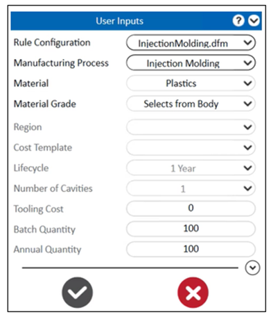
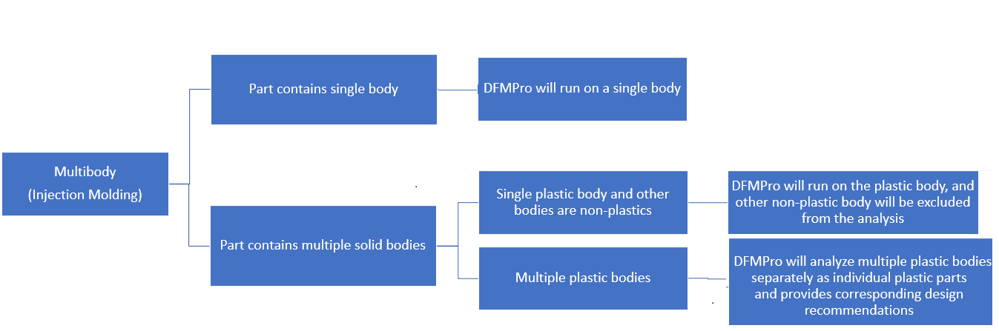

DFMPro は「射出成形」におけるマルチボディ部品設計をサポートします。
部品に複数のプラスチックボディが含まれている場合、DFMPro はそれらを個別のプラスチック部品としてそれぞれ解析し、各ボディに対応した設計推奨事項を提供します。
プラスチックボディは、ボディに割り当てられている材料（プラスチック材料）に基づいて識別されます。
抜き方向および金型壁分類の編集は、すべてのプラスチックボディで共通となります。
プラスチック材料がボディに割り当てられている場合、DFMPro はそのボディに割り当てられた材料を使用します。材料選択ドロップダウンには「Selects from Body」と表示されます（下図参照）。材料選択ドロップダウンは無効化されるため、ユーザーは材料を変更できません。
インサート成形の場合、1 つのボディがプラスチック部品となります。他のインサートについては、DFMPro は割り当てられたボディ材料（プラスチック材料）に基づいてプラスチックボディを識別し、インサートボディは解析対象から除外されます。
オーバーモールディングの場合、DFMPro はこれら 2 つのボディを個別のプラスチック部品としてそれぞれ解析します。


注記：
抜き方向および金型壁分類の編集は、すべてのプラスチックボディで共通となります。
マルチボディ射出成形部品設計の場合、パーティングラインのサポートは利用できません。